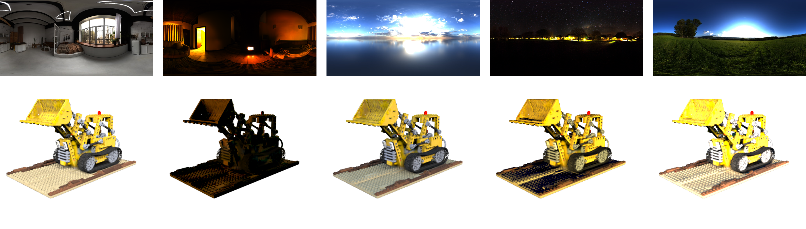
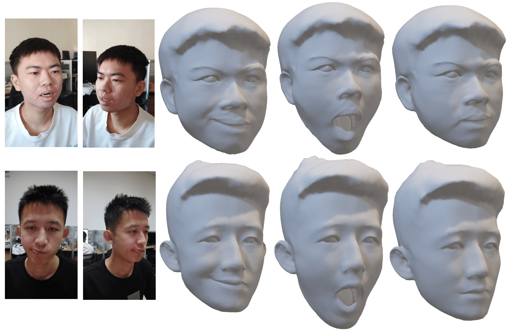

|
I am a senior student in the Weiyang College at Tsinghua University now. Additionally, I'm an incoming Ph.D. Candidate at the School of Software, Tsinghua University, advised by Feng Xu. My research lies at the intersection of 3D computer vision and computer graphics. Email / Google Scholar / Twitter / Github |
|
|
|
|  |
Libo Zhang, Yuxuan Han, Wenbin Lin, Jingwang Ling, Feng Xu APSIPA ASC, 2024 paper / code |
|  |
Xin Ming, Jiawei Li*, Jingwang Ling, Libo Zhang, Feng Xu ECCV, 2024 paper |